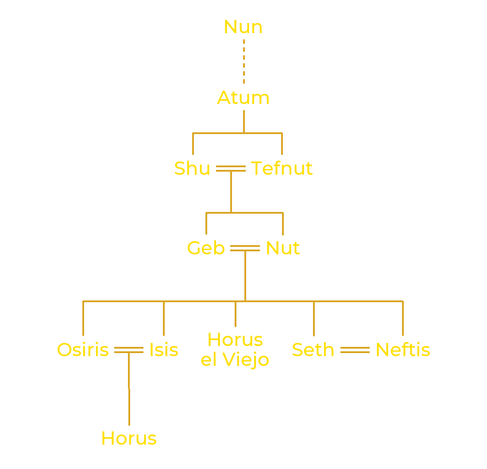

Al principio de todo existía un océano primordial llamado el Nun, dominaba la oscuridad y nada existía.
De ese océano primordial emergió Atum o Tem ("El que es completo", "El que es la totalidad",
"El que es y el que no es"), el primero de los dioses, que se dio a sí mismo
el nacimiento al tomar conciencia de su propia existencia. El dios imaginó entonces un montículo de tierra llamado
el Benben en medio de las aguas, y este apareció para que pudiera posarse en él. Atum no tiene pareja, así que
se une consigo mismo mediante el onanismo, y de ese acto nacen dos hijos: un hijo, Shu ("aliento vital" y dios del aire seco),
y una hija, Tefnut (la diosa del aire húmedo).
Este nacimiento tiene consecuencias considerables
porque Shu es la Vida, es decir, es la vida en sí misma y también es la luz. Tefnut es la
primera diosa, el primer ser femenino de la Creación. Es la esposa de su hermano Shu. Representa
el calor del sol y es una personificación de Maat. Maat aparece muy pronto, cuando el Creador toma
conciencia y pone en marcha la mecánica celeste. Maat es una entidad metafísica que rige el orden. Maat es
el Orden que mantiene el equilibrio entre el Bien y el Mal, y mantiene al Caos a raya. Para los egipcios, el Bien
y el Mal son inseparables: uno no puede existir ni prosperar sin el otro.

De la unión de Shu y Tefnut nacieron dos hijos: Geb, la tierra, y Nut, el cielo. De Atum surgirá el
sol que más tarde se convertirá en Ra, el dios solar, pero este no puede moverse con normalidad. Así,
para garantizar el equilibrio y el orden cósmico, Atum ordena a Shu mantener separados la Tierra (Geb) y el Cielo (Nut):
el Universo quedó entonces creado, y poco a poco el Nun fue relegado al exterior del nuevo mundo emergente.

El demiurgo Atum es quien da vida a los seres humanos, tal como se la dio a los primeros dioses. El hombre no aparece sobre la tierra por sí solo. Los Textos de los Sarcófagos (textos funerarios del Imperio Medio, 2000-1780 a. C.) hablan varias veces de esta creación, y en especial este breve pasaje: "los hombres son las lágrimas de mi ojo". Uno de los relatos más frecuentes sobre la creación del hombre cuenta que los hombres nacieron de las lágrimas del ojo del demiurgo, y Shu les insufló la vida.
Una de las consecuencias de la aparición del sol y del cielo es la carrera solar de 360 días de Ra y la creación del día
y de la noche. Pero, como se sabe, un año tiene 365 días. Así pues, quedan 5 días. Estos últimos días
forman parte de la Creación. En efecto, Nut, encinta, no podía dar a luz durante el curso normal del sol,
y hubo que encontrar un subterfugio. Entonces, según una leyenda, Thot jugó con la Luna y ganó, dando origen
a los cinco días adicionales, permitiendo así que Nut diera a luz sin contratiempos. 
De hecho, estos últimos cinco días se llaman "epagómenos". Este término proviene del griego epagómena hemera, que significa día
añadido. En la cosmogonía egipcia, estos días se identifican con los "hijos de Nut", cinco en total:
Isis, Osiris, Seth, Neftis y Horus el Viejo (que no debe confundirse con Horus, el hijo de Isis y Osiris). Estas cinco divinidades
revelarán a los hombres las malas acciones. Así, el primer día nació Osiris; el segundo día, Horus el Viejo; después, Seth;
el cuarto, Isis, y finalmente, el último día, Neftis. Estos días no son bien recibidos por los egipcios, y en particular
el tercero, el de Seth.
Es un grupo de nueve entidades divinas imaginado por los teólogos de Heliópolis, que simboliza las fuerzas necesarias para la creación del mundo organizado: el demiurgo Atum, sus hijos Shu y Tefnut, sus nietos Geb y Nut, y sus descendientes, con excepción de Horus el Viejo: las dos parejas Isis y Osiris, Neftis y Seth.
Cuando el creador toma conciencia de sí mismo, recordemos que el Nun poseía los ingredientes necesarios para la creación.
Pero para llevar a cabo su tarea, Atum no está solo: unas serpientes lo ayudarán, aunque estas bestias son peligrosas una vez que el mundo existe,
porque pertenecen al Nun, el Caos que amenaza el orden cósmico. Y cuando Ra, el sol, abandona el cielo diurno para adentrarse
en la oscuridad de la noche, debe realizar, a bordo de su barca solar, un viaje de 12 horas antes de renacer al amanecer. Uno de los enemigos del sol es la
serpiente gigante Apofis, nacida en el corazón del Nun. Increado como Atum, Apofis no puede ser destruido. Solo puede ser neutralizado.